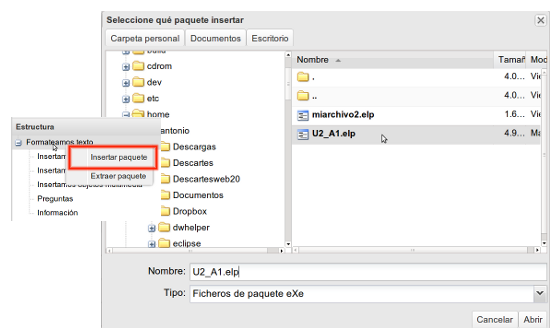

Insertar paquete
Utilizaremos la opción de Fusionar Elps > Insertar paquete cuando queramos completar nuestro trabajo con otro que tengamos hecho o que hayamos descargado de Internet.
Tendremos que tener en cuenta las licencias del nuevo paquete para no incurrir en incompatibilidades.
El proceso será sencillo
1.- En el árbol de contenidos seleccionaremos el nodo a partir del cual queremos insertar el nuevo contenido.
2.- Haciendo clic en el botón derecho del ratón se nos mostrará la opción de "Insertar paquete". Es posible acceder a esta opción desde el menú Archivo > Fusionar Elps.
3.- Seleccionando la opción se nos abrirá una ventana de navegación en donde seleccionaremos el paquete .elp a insertar.
4.- Una vez seleccionado, el contenido del nuevo paquete se integrará en un nivel inferior al nodo desde el que lo hemos insertado.

Observa que los metadatos e información de la pestaña de propiedades del paquete en el que se está trabajando se mantienen y no varían por insertarle nuevos elps. En el caso de que el paquete insertado tenga metadatos, estos se eliminarán.
CeDeC. eXeLearning. Insertar paquete elp. (CC by)
¿Sabías que?
Frecuentemente oímos conceptos como propiedad intelectual, copyright o derechos de autor. ¿Qué entendemos por esos términos?
La Declaración Mundial sobre la Propiedad Intelectual se refiere a ésta como "cualquier propiedad que, de común acuerdo, se considere de naturaleza intelectual y merecedora de protección". A nosotros nos interesa en particular una de las vertientes de la propiedad intelectual denominada derechos de autor.
Los derechos de autor son un conjunto de normas y principios que regulan los derechos de los autores, por el simple hecho de crear una obra, esté publicada o inédita. Esto significa que desde el momento en que un autor crea su obra (construye un texto, hace una fotografía, ...) posee una serie de derechos sobre la misma.
Estos derechos incluyen los denominados derechos morales y los derechos patrimoniales. Los primeros son a los que más referencia hace la legislación española e incluyen aspectos como el reconocimiento de la condición de autor de la obra o el reconocimiento del nombre del artista sobre sus interpretaciones o ejecuciones. También, tal y como aparece en la página del Ministerio de Cultura, el derecho de exigir el respeto a la integridad de la obra y a la no alteración de las mismas.
Por otro lado, los derechos patrimoniales son aquellos susceptibles de tener un valor económico y suelen estar asociados al concepto anglosajón de Copyright o derecho de copia. El famoso Copyright, representado a través de la archiconocida © ha quedado asociado a la idea de todos los derechos están reservados.
Aunque este modelo ha protegido de una forma más o menos eficaz los derechos de los autores hasta ahora, el desarrollo de Internet y el intercambio de información al que va asociado hacen que su uso limite las posibilidades de los educadores. Es por ello que en los últimos años han aparecido intentos por eliminar o reducir las barreras legales que limitan el flujo libre y la reutilización del conocimiento.
Conceptos como Copyleft (juego de palabras que propone la posibilidad de que el receptor de una copia, o una versión derivada de un trabajo, pueda, a su vez, usar, modificar y redistribuir tanto el propio trabajo como las versiones derivadas del mismo) o las licencias Creative Commons, las cuales dejan al autor establecer qué derechos están o no reservados, están teniendo un impacto significativo en cómo entendemos los derechos de autor.
En el enlace te mostraremos las licencias que pueden considerarse más relevantes y útiles en el ámbito educativo.
Practica eXe: insertar paquete
Realiza los siguientes procedimientos:
- Abre tu archivo cualquiera de los que te has descargado.
- Inserta en él otro de los archivos que descargaste o bien la unidad didáctica con la que has trabajado.
- Modifica las propiedades del .elp.
- Guarda el .elp resultante con un nombre diferente.
- Haz la exportación para poder ver el resultado.
Obra publicada con Licencia Creative Commons Reconocimiento Compartir igual 4.0